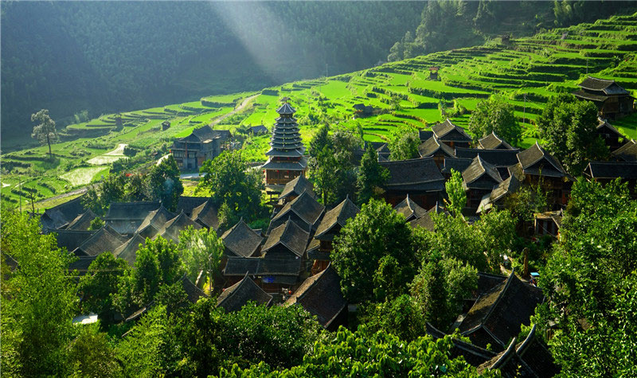
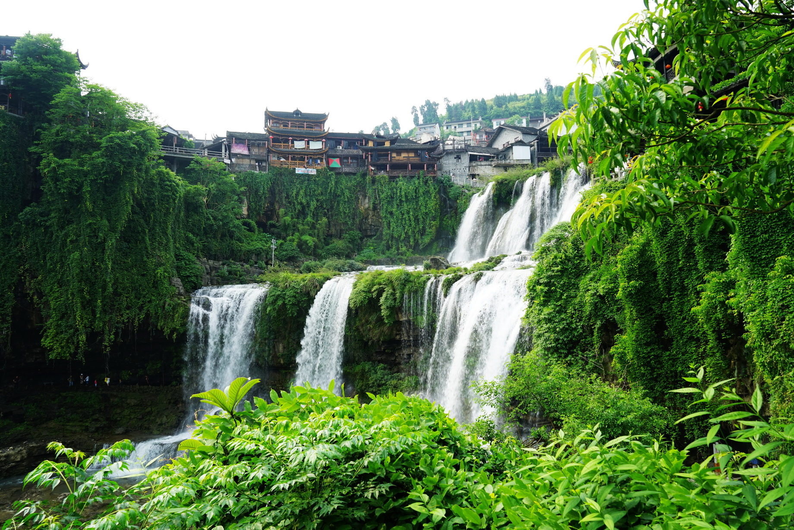

湖南，位于中国长江中游，洞庭湖以南，是中华人民
共和国的缔造者毛泽东诞生的地方，在近代涌现出许许多多
的军事家，政治家，有历史学家谭其骧盛赞到“清季以来，湖南人才辈出，功
业之盛，举世无出其右！”
湘江是湖
南境内最大的河流，也是湖南人民的母亲河
。她自南向北，流贯全省，注入洞庭湖，湖南因
而简称“湘”。湖南境内广植芙蓉，古诗有“秋风万
里芙蓉国”之句，故湖南省还有“芙蓉国”的美誉。毛
泽东曾在诗中盛赞：“芙蓉国里尽朝晖”。湖南东邻江西，
北交湖北，西连重庆、贵州，南接广东、广西，辖13个市
和1个自治州，共有136个县（市、区）以上行政单位，省会
设长沙市。全省地势是，东南西三面环山， 东有罗霄山脉，
南有南岭，西有武陵、雪峰山脉；北部为洞庭湖平原；中部多为
丘陵、盆地。湘江、资江、沅江、澧水（称“四水”）汇聚洞庭湖
，流入长江。按地理位置，全省大致可分为湘北（常德、益阳、
岳阳三市），湘中（长沙、株洲、湘潭、邵阳、娄底五市），湘南
（衡阳、永州、郴州三市），和湘西（怀化、张家界两市及湘西
土家族苗族自治州）四个区域。湖南总面积为21.18万平方公里，
湖南户籍人口总数达到6805.70万人。
